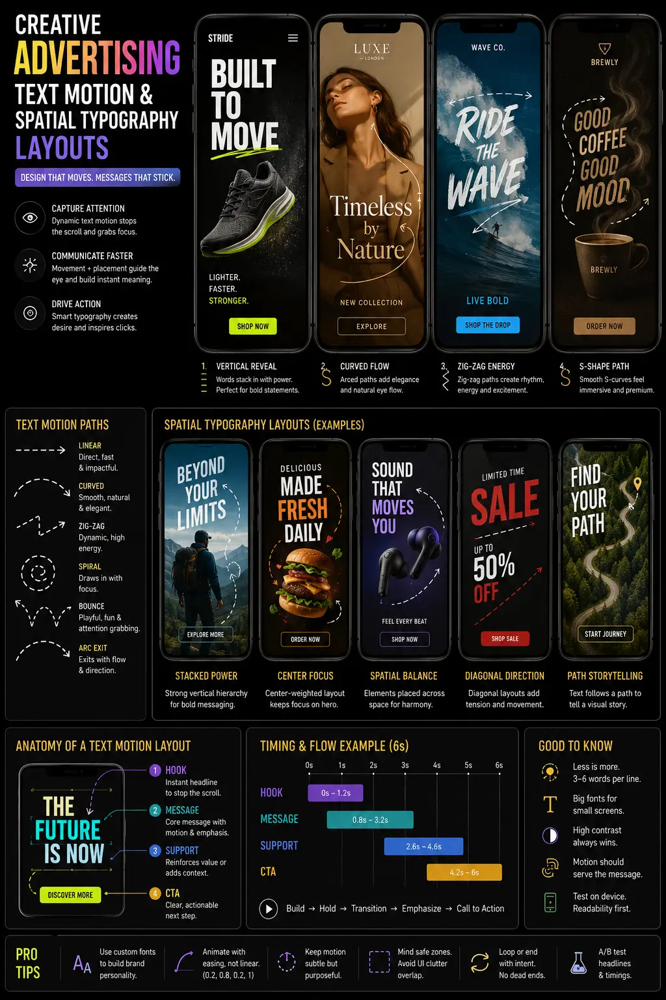
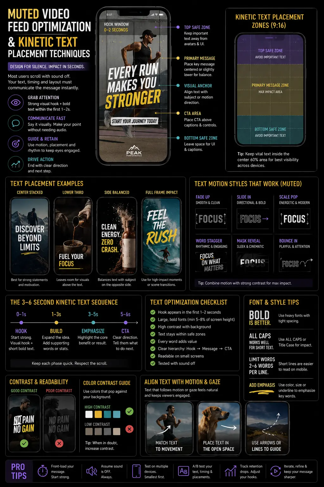

Designing Multi-Layered Text Motion Paths for Muted Vertical Feeds
The Challenge of Silent Scrollers in Mobile Feeds
In today's hyper-competitive social media landscape, capturing a user's attention is a battle fought in milliseconds. As vertical video platforms like Instagram Reels, TikTok, and YouTube Shorts continue to dominate consumer attention, a major behavioral trend has emerged: up to 85% of users scroll through these feeds with their devices completely muted. Whether scrolling in a quiet office, on public transport, or in bed next to a sleeping partner, the average viewer has deactivated audio. This silence presents a massive barrier for brands that rely on traditional voiceovers or catchy audio tracks. To bridge this communication gap, video editors and marketers must adopt comprehensive strategies for Muted Video Feed Optimization. Simply overlaying basic static subtitles is no longer sufficient; to truly stand out, creatives must embrace the art of Creative Advertising Text Motion to convey message hierarchy, emotion, and brand identity purely through visuals.
When you optimize your content for soundless consumption, the text on screen must do the heavy lifting of storytelling. This is not about merely displaying what is being said, but rather designing a dynamic visual voice that guides, highlights, and convinces the viewer without a single sound wave leaving the speaker. Effective soundless video design requires a deep understanding of mobile screen real estate and human reading psychology. By employing advanced techniques such as Spatial Typography Layouts, editors can turn dry text into interactive elements that mesh beautifully with the video's action, while carefully plotted on-screen text animation paths direct the viewer's gaze precisely to critical calls to action. Let us dive deep into the technical and creative frameworks required to execute high-retention vertical video content.
Why Static Subtitles Fail on Mobile Screens
For years, standard subtitling was seen as a post-production afterthought—a simple transcript rendered at the bottom center of the video frame. However, in the context of fast-paced vertical feeds, static subtitles fail to deliver the retention required for modern advertising campaigns. Static text blocks are often visually unstimulating; they require conscious reading effort from the viewer, which increases cognitive load and often results in the user scrolling past the video. In contrast, Creative Advertising Text Motion keeps the viewer's brain active by transforming text into moving, breathing visual stimuli. When words scale, shift, and transition in sync with the speaker's rhythm, they mimic the natural cadences of spoken language, creating a pseudo-auditory experience for the viewer.
Furthermore, standard subtitles are rarely customized for the platform they are posted on, meaning they frequently fall victim to user interface overlaps. Every vertical platform has a busy layout composed of user profiles, video captions, hashtags, like buttons, comments, and sharing options. When text is placed carelessly, it is easily blocked by these UI elements. To prevent this, editors must use subtitle safety zone overlays during their edit sessions. These grid overlays define the exact boundaries of the frame that remain free of platform icons, ensuring that all kinetic text placement is perfectly visible, legible, and optimized for mobile screens. By adhering to Reel caption styling guidelines, editors can position high-contrast text blocks in the middle third of the frame, avoiding critical visual cut-offs. This makes your dynamic video typography stand out.
Strategic Principles of Spatial Typography
To elevate typography beyond simple captioning, modern editors are turning to Spatial Typography Layouts. This technique involves integrating text directly into the three-dimensional space of the video clip, rather than letting it sit as a flat 2D layer on top of the footage. By using camera tracking software (such as Mocha or the built-in 3D camera tracker in Adobe After Effects), editors can pin text elements to specific objects, walls, or planes within the video scene. For example, as a presenter walks through an office space, key features of their product can float in the air next to them, reacting naturally to camera movement and depth changes.
By placing text behind the subject using mask overlays or rotoscoping, you create a sense of depth that makes the typography feel like an organic part of the environment. This multi-layered layout dramatically increases production value and commands attention. When combined with carefully mapped on-screen text animation paths, the text can glide out from behind an object or follow the speaker's hand gestures, drawing the viewer's eyes exactly where you want them to look. This structural harmony between live-action footage and animated text is the foundation of high-performing soundless video design.
Maximized Viewer Retention
Implementing Muted Video Feed Optimization allows your vertical videos to capture and retain user attention from the very first frame. By deploying dynamic on-screen text animation paths, you create an engaging visual rhythm that keeps silent scrollers glued to the screen for longer durations, boosting watch-time metrics.
Enhanced Narrative Clarity
Utilizing Spatial Typography Layouts ensures that your message is conveyed clearly and naturally. Integrating text into the visual scene through precise kinetic text placement helps viewers follow the spoken narrative effortlessly, resolving the major limitation of soundless social media environments.
Full Platform Compatibility
Designing with subtitle safety zone overlays ensures that your on-screen captions never overlap with platform UI elements like comments or share buttons. Adhering to these safe boundaries keeps your dynamic video typography readable across all mobile devices and viewing formats.
Professional Brand Authority
Adhering to strict Reel caption styling guidelines elevates your brand's aesthetic. High-quality soundless video design combined with custom typography transitions transforms standard captions into a powerful visual asset, establishing immediate authority in crowded social feeds.

Mapping On-Screen Text Animation Paths
Creating effective on-screen text animation paths is a delicate balance of art and science. The path along which text travels must feel organic and align with the visual flow of the scene. In Western cultures, the eye naturally scans screens from left to right and top to bottom. However, on mobile devices, users tend to focus on the center of the vertical frame. Therefore, motion paths should guide the viewer's eye back to the center or direct it along the line of action. For example, if a presenter points to their right, the text should slide out from that specific direction, matching the velocity of the hand gesture.
The speed and ease of the animation paths must be finely tuned. Jarring, ultra-fast, or chaotic text movements can disorient the viewer, leading to cognitive fatigue. Editors must use easing curves (like ease-in and ease-out) to make the text transitions smooth and fluid. When designing dynamic video typography, you can use these motion paths to establish a hierarchy of information. Primary headers might slide in on a curved path to command attention, while secondary details fade in gently using a simple linear slide. This careful orchestrating of movement is key to successful Creative Advertising Text Motion, turning a silent reading exercise into an immersive cinematic experience.
Adhering to Subtitle Safety Zone Overlays
One of the most common mistakes in vertical video production is neglecting platform-specific user interface elements. On platforms like Instagram Reels, a significant portion of the screen is covered by UI elements. The bottom 20% contains the publisher's username, music title, and caption. The right side is occupied by the profile picture, like, comment, share, and menu icons. Additionally, the very top of the screen may feature search bars or status indicators depending on the mobile OS. If your kinetic text placement falls within these zones, it will overlap with the platform's native text and buttons, rendering your message unreadable and giving your ad a sloppy, unprofessional look.
To combat this issue, professional editing workflows involve importing standard subtitle safety zone overlays directly onto the editing timeline. These overlays act as transparent template grids, showing editors exactly where the "safe zones" lie (usually the central 1080x1080 area of a 1080x1920 canvas). By keeping all crucial text, logo overlays, and key visual details within these safe boundaries, you guarantee that your message remains fully visible on all devices, regardless of platform updates. Adhering to these safety zones is a non-negotiable step in Muted Video Feed Optimization, ensuring that your dynamic video typography is clear and readable for every single user.
Reel Caption Styling Guidelines for Maximum Contrast
Establishing readability on small mobile displays is a major challenge, especially when the video background changes rapidly from dark to light. To maintain high legibility under all conditions, editors must follow strict Reel caption styling guidelines. First, select a bold, heavy-weight sans-serif typeface (such as Montserrat Black, Impact, or Bebas Neue). Serif or thin decorative scripts should be avoided, as they quickly become illegible at small sizes on mobile displays. Second, apply high-contrast styling details. A black border stroke (between 3 to 5 pixels) or a soft drop shadow with high opacity ensures the text pops, regardless of what is happening in the background.
Another effective styling technique is the use of semi-transparent backing boxes (or "word plates") behind the text. This technique provides a uniform background for the text, completely eliminating legibility issues caused by busy or colorful footage. Furthermore, using kinetic highlighting—where key words are colored in bright yellow or neon green while the rest of the sentence remains white—is a proven method to maintain viewer interest. This structured approach to Reel caption styling guidelines directly influences the effectiveness of your soundless video design, helping your text stand out, command attention, and drive conversion rates.
Essential Design Tools
- Adobe After Effects for custom on-screen text animation paths and 3D tracking.
- Premiere Pro with auto-transcribe tools for fast caption alignment.
- CapCut Pro & Submagic for quick mobile-friendly caption templates.
- DaVinci Resolve for high-end color grading and integrated title designs.
Layout Parameters
- Central positioning within subtitle safety zone overlays.
- Font selection: High-impact bold sans-serif typefaces.
- Sizing: 60px to 80px range for mobile-friendly viewability.
- Drop shadows, high stroke settings, and semi-transparent backing boxes.
Core Strategy Pillars
- Muted Video Feed Optimization applied from the initial script stage.
- Strategic kinetic text placement aligned with visual focal points.
- Creating custom, brand-aligned dynamic video typography rules.
- Rigorous mobile-first testing across multiple vertical platforms.

Kinetic Text Placement and Cognitive Load
When watching a video, the viewer is processing multiple visual signals simultaneously: the subject's face, their hand gestures, background changes, and the text on screen. If the text is placed far away from the subject's face (for instance, at the very bottom of the vertical frame while the speaker's eyes are in the upper third), the viewer's eyes must constantly dart up and down. This rapid, repetitive eye movement increases cognitive load, causes eye fatigue, and eventually drives the user to swipe away. Intelligent kinetic text placement addresses this issue by positioning text near the natural focal point of the scene.
By placing the animated words close to the speaker's face or directly over the product being highlighted, you minimize eye travel distance. The viewer can comfortably read the text while simultaneously absorbing the speaker's facial expressions and body language. This cohesive viewing experience is a primary objective of Muted Video Feed Optimization. Keeping the text close to the action keeps the viewer engaged, improves comprehension, and ensures that the core value propositions of your Creative Advertising Text Motion are fully digested, even when watched in total silence.
Developing Dynamic Video Typography for Brand Identity
While readability is paramount, typography must also reflect your brand's unique identity. dynamic video typography is not just about moving text; it is the visual extension of your brand's voice, tone, and character. A high-end luxury brand should utilize sleek, minimalist, and smooth text animations with clean tracking and elegant fades. Conversely, a bold B2B software company or an energetic fitness brand might employ rapid, bouncy, and colorful text pops with energetic motion paths. The key is consistency; your custom styling should match the overall mood of the creative.
When developing a video campaign, establish a unified style guide for your on-screen text. Define the specific primary and secondary brand colors to use for highlighting key words, select the exact typefaces that match your brand guidelines, and stick to a consistent animation style. Integrating these guidelines with Spatial Typography Layouts ensures that your brand appears polished and professional across all channels. When a user scrolls past your ad on a silent feed, the unique combination of your logo, color palette, and distinct dynamic video typography should instantly signal who you are, driving long-term brand recall.
The Anatomy of Soundless Video Design
Designing a video specifically for soundless consumption requires a fundamental shift in how you write and story-board your content. In traditional production, the audio script is written first, and the visuals are shot to match the spoken words. In soundless video design, you must reverse this process or treat both elements with equal weight. From the very first second, the visual hooks must be strong enough to stand alone. You must plan for how the text will interact with the live-action footage from day one.
For example, you can script moments where the speaker physically interacts with the text—swiping it away, pointing to make a word appear, or walking through a wall of floating text. This level of planning takes your video to a new creative height, changing it from a video that has subtitles added to it, to a video that was built around its typography. By combining these interactive visual concepts with smooth on-screen text animation paths, strict compliance with subtitle safety zone overlays, and structured Reel caption styling guidelines, you create high-converting vertical video assets that out-perform traditional, audio-reliant ads in every key retention metric.
Measuring the Success of Muted Video Campaigns
Once your optimized vertical videos are live, it is essential to track specific metrics to measure the effectiveness of your text-motion strategies. Pay close attention to "Average Watch Time" and "Hook Rate" (the percentage of users who watch past the first 3 seconds). If your hook rate is high but your average watch time drops off quickly, it may indicate that your initial text animation was engaging, but the subsequent kinetic text placement was hard to read, or the pacing was too fast, causing visual fatigue.
Additionally, run A/B tests comparing videos with standard lower-third captions against videos with stylized Spatial Typography Layouts and custom on-screen text animation paths. In almost all paid social campaigns, assets utilizing Creative Advertising Text Motion and thorough Muted Video Feed Optimization demonstrate significantly higher retention rates, lower cost-per-acquisition (CPA), and higher click-through rates (CTR). By constantly refining your visual typography style based on actual performance data, you can build a highly efficient, scalable creative engine for your business.
How The PhD Ads Delivers High-Performance Vertical Video Creatives
Designing high-converting vertical video assets requires a unique blend of technical video editing skills, graphic design expertise, and marketing strategy. At The PhD Ads, a premier creative agency based in Madurai, we specialize in helping brands optimize their video assets for the modern mobile scroll. Our post-production team is expert at applying strict Reel caption styling guidelines and mapping custom on-screen text animation paths to ensure your message is communicated beautifully and clearly on every feed.
We don't believe in generic, auto-generated subtitle templates. Instead, we craft bespoke Spatial Typography Layouts that reflect your brand's unique identity, keeping all critical text safe from platform UI overlaps by adhering to precise subtitle safety zone overlays. Whether you are running paid social campaigns on Instagram, TikTok, or LinkedIn, our soundless video design frameworks ensure that your creative assets capture attention, reduce viewer drop-off, and drive meaningful business results. Partner with us to transform your raw video footage into a high-retention, conversion-optimized marketing asset.
Key Topics
Ready to Capture Muted Attention with Kinetic Video Typography?
At The PhD Ads in Madurai, we specialize in delivering cutting-edge video editing, Creative Advertising Text Motion strategies, and Muted Video Feed Optimization. Let us transform your raw footage into high-retention, platform-optimized vertical videos.
Email: team@e2o.in